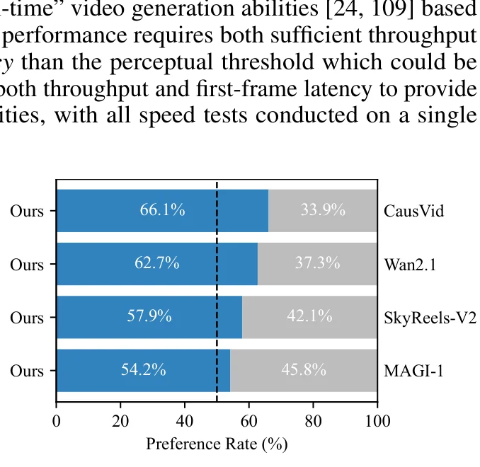

问题动机：自回归视频扩散的曝光偏差
视频生成领域近期取得了巨大进展，最先进的系统已经能生成具有复杂时间动态的高度逼真内容。然而，这些成果通常依赖于双向注意力扩散Transformer（DiT）——所有帧同时去噪，未来可以影响过去。这种设计从根本上限制了实时流式应用：生成当前帧时，未来的信息尚不可知。
自回归（AR）模型天然契合时间媒体的因果结构——逐帧顺序生成，显著降低观看延迟，并解锁实时交互内容创作、游戏模拟、机器人学习等场景。但 AR 模型长期受困于一个核心问题：曝光偏差（Exposure Bias）。
曝光偏差源于训练与推理时的分布不匹配：训练时模型基于干净的真实上下文帧（ground-truth context）学习去噪，但推理时必须依赖自己生成的不完美预测作为上下文。这种分布偏移导致误差在自回归链中逐步累积——如同传话游戏中信息逐级失真，最终造成视频质量随时间严重退化，表现为过度饱和、过度锐化或结构崩塌。
现有的两种训练范式均未根本解决这一问题：
Self Forcing 的灵感来自 RNN 时代的序列级训练技术（Professor Forcing、SeqGAN 等），但首次将其系统地应用于视频扩散模型，并结合 few-step diffusion 和随机梯度截断策略，使其在工程上切实可行。
三种训练范式的深度对比
给定 $N$ 帧视频 $x_{1:N} = (x_1, x_2, \ldots, x_N)$，自回归视频扩散模型通过链式法则分解联合分布：
每个条件分布 $p(x_i \mid x_{\lt i})$ 由扩散过程建模——从高斯噪声出发，以前序帧为条件，逐步去噪生成当前帧。前向过程将第 $i$ 帧加噪为：
模型通过预测添加的噪声 $\hat{\epsilon}_\theta^i := G_\theta(x_{t_i}^i, t_i, c)$ 来学习逆过程，训练目标为帧级去噪损失：
TF 和 DF 的关键区别在于时间步采样策略：TF 中所有帧共享同一时间步 $t_i$，而 DF 中每帧独立采样 $t_i$。但两者的训练输出都不属于模型在推理时实际生成的分布。
图 1：三种训练范式对比。TF/DF 使用因果注意力掩码并行训练全视频，SF 通过 KV 缓存串行自展开，训练过程镜像推理。
TF 和 DF 必须使用 block sparse attention masks 来在并行处理所有帧的同时强制因果依赖，这引入了额外计算开销（即便使用 FlexAttention 优化）。Self Forcing 则因为逐帧串行展开 + KV 缓存，天然满足因果性——当前帧只需 attend 到缓存中的历史 KV，无需任何掩码。这使得 SF 可以使用高度优化的 FlashAttention-3 内核，反而比"并行"的 TF/DF 更快。
核心方法：自回归自展开训练
Self Forcing 的核心思想是：在训练时按照推理时的配方执行自回归自展开（self-rollout）。具体而言，从模型自身分布 $p_\theta(x_{1:N}) = \prod_{i=1}^{N} p_\theta(x_i \mid x_{\lt i})$ 采样视频序列，每帧通过迭代去噪生成，以前序自生成的干净帧为条件。
Few-Step Diffusion 近似
使用标准的多步扩散模型实现 Self Forcing 在计算上不可行——需要展开并通过长去噪链反向传播。因此，论文选择 few-step diffusion model $G_\theta$ 来近似每个条件分布。考虑时间步子序列 $\{t_0=0, t_1, \ldots, t_T=1000\}$，模型分布隐式定义为：
实际使用 4步去噪，时间步调度为 $[t_4, t_3, t_2, t_1] = [1000, 750, 500, 250]$。每步去噪后将预测的干净帧通过前向过程重新加噪到下一个时间步，这是 few-step diffusion 的标准做法。
训练时的 KV 缓存
Self Forcing 的关键创新之一是在训练时使用 KV 缓存——此前 KV 缓存仅用于推理。如图 2(c) 所示，自展开训练过程中，每生成一帧后，将其 KV embedding 写入缓存，后续帧通过 full attention attend 到缓存内容。这与 TF/DF 使用注意力掩码并行处理全视频形成鲜明对比。
图 2：Self Forcing 自展开训练流程。每个 Block 串行生成，去噪到随机步 s 后输出，梯度仅在该步保留。绿色虚线表示 KV 写入缓存。
算法形式化
Algorithm 1 给出了完整的训练过程。核心循环为：对每个帧 $i$，从纯噪声出发，经过 $T \to s$ 步去噪（其中 $s$ 是随机采样的截断点），在 $s$ 步启用梯度计算获得输出 $\hat{x}_0^i$，然后禁用梯度并将 $\hat{x}_0^i$ 的 KV embedding 写入缓存。
每个训练迭代随机采样 $s$，使用第 $s$ 步的去噪输出作为最终输出。这确保所有中间去噪步都接收到监督信号——如果总是使用最后一步，前面的步将缺乏梯度而无法学习。
Self Forcing 的核心哲学可以概括为"训练即推理"（train as you infer）。通过在训练时完整模拟推理过程——包括 KV 缓存的使用、自回归展开、few-step 去噪——模型在训练阶段就"见过"自己推理时会产生的一切误差，并通过分布匹配损失学习纠正这些误差。这与 GAN 中生成器在训练和推理时遵循相同过程的原理一脉相承。
随机梯度截断策略
即使用 few-step diffusion，朴素地通过整个自回归扩散过程反向传播仍会导致显存消耗过高。论文提出了三层梯度截断策略来平衡计算成本与性能：
torch.no_grad()。通过 dist.broadcast 跨 GPU 同步截断点。start_gradient_frame_index = num_output_frames - 21），前面的帧全部 no_grad。前帧通过 VAE 重新编码为 image latent。detach 限制梯度流入 KV cache embeddings，防止跨帧的长链反向传播。图 3：三层梯度截断策略。Block 级（随机步 s）、帧级（最后 21 帧）、KV 级（梯度隔离）。
梯度截断本质上是有偏估计——它丢弃了通过历史帧的梯度路径，因此不是精确的梯度方向。但正如策略梯度中的 detach 或actor-critic中的停止梯度，这种有偏性反而带来了方差降低和训练稳定性。论文实验证明：截断后的 Self Forcing 仍显著优于不截断的 TF/DF，说明"正确的分布匹配方向 + 有但够用的梯度信号"胜过"错误分布上的精确梯度"。
全局分布匹配损失
自回归自展开从推理时的模型分布直接采样，使我们能够应用视频级全局损失——对齐生成视频分布 $p_\theta(x_{1:N})$ 与真实视频分布 $p_{\text{data}}(x_{1:N})$。为利用预训练扩散模型并增强训练稳定性，对两个分布施加前向扩散噪声后匹配 $p_{\theta,t}(x_t^{1:N})$ 和 $p_{\text{data},t}(x_t^{1:N})$。
论文考虑了三种分布匹配框架，它们分别最小化不同的散度度量：
DMD 损失推导
DMD 的 KL 散度梯度由 real score $s_{\text{real}}$（冻结的预训练模型 $f_\phi$）和 fake score $s_{\text{fake}}$（学习的 critic $f_\psi$）之差给出：
等价的损失函数为：
其中 $\text{sg}[\cdot]$ 为停止梯度算子，$f_\phi$ 为 real score network（Wan2.1-14B），$f_\psi$ 为 fake score network（从 Wan2.1-1.3B 初始化）。
SiD 损失
$\alpha = 0.5$ 对应 Fisher 散度的梯度。实验中 $\alpha = 1$（省略第二项）训练更稳定。
GAN 损失
GAN 版本在 critic 网络上添加交叉注意力层和分类头，使用 relativistic loss 和有限差分近似的 R1/R2 正则：
使用 $\lambda = 30$, $\sigma = 0.05$，batch size 768 以保证训练稳定性。
CausVid 同样使用 DMD 来匹配生成视频分布，但其训练输出通过 Diffusion Forcing 生成——这意味着 DMD 优化的是 DF 输出分布，而非推理时模型自身的 AR 生成分布。这是一个致命缺陷：DMD 在匹配错误的分布。Self Forcing 通过自展开确保训练输出直接来自推理时模型分布，DMD/SiD/GAN 因此匹配的是正确的目标分布。实验表明这一区别带来了 +3.11 VBench Total Score 的提升（84.31 vs 81.20）。
帧级 vs 视频级分布匹配
TF/DF 本质上执行的是帧级分布匹配：
而 Self Forcing 执行的是视频级全局分布匹配：$D\big(p_{\text{data}}(x_{1:N}) \| p_\theta(x_{1:N})\big)$。根本区别在于上下文帧的来源——TF/DF 从数据分布采样（干净或带噪），Self Forcing 从模型自身分布 $p_\theta$ 采样。这种训练-推理分布的对齐有效解决了曝光偏差。
滚动 KV 缓存：无限长视频生成
自回归模型相比标准视频扩散模型的一个关键优势是外推能力——原则上可通过滑动窗口推理生成无限长视频。然而，现有实现存在严重的效率问题：
图 4：三种滑动窗口策略对比。滚动 KV 缓存维护固定大小缓存，驱逐最旧帧，实现 O(TL) 复杂度的无限长视频生成。
训练适应：局部注意力窗口
滚动 KV 缓存的朴素实现会导致严重的闪烁伪影。原因在于第一帧的统计特性不同：它只编码第一张图像而不执行时间压缩，模型在训练中始终看到第一帧作为 image latent。当第一帧在滚动缓存中不再可见时，模型无法泛化。
解决方案简洁但有效：训练时限制注意力窗口，使模型在去噪最后一个 chunk 时无法 attend 到第一个 chunk，从而模拟长视频生成时遇到的情形。
滚动 KV 缓存的灵感来自大语言模型中的 Attention Sinks 研究（Xiao et al., ICLR 2024）。LLM 中发现 Transformer 倾向于将大量注意力分配给最初的几个 token（"attention sink"），即使它们语义无关。视频扩散模型中也存在类似现象——第一帧（image latent）扮演了 attention sink 的角色。Self Forcing 的解决方案不是保留 sink（如 StreamingLLM），而是训练模型在没有 sink 的情况下工作，通过局部注意力窗口训练消除对第一帧的依赖。
实验结果：实时视频生成的新标杆
实验基于 Wan2.1-T2V-1.3B（Flow Matching 模型，16 FPS，832×480 分辨率），遵循 CausVid 的初始化协议：先用因果注意力掩码在 16k ODE 解对上微调基础模型。使用 4-step diffusion，实现了 frame-wise 和 chunk-wise 两种自回归变体。
主实验：与基线对比
| 模型 | 参数量 | 吞吐(FPS) | 延迟(s) | 总分 | 质量分 | 语义分 |
|---|---|---|---|---|---|---|
| 扩散模型 | ||||||
| LTX-Video | 1.9B | 8.98 | 13.5 | 80.00 | 82.30 | 70.79 |
| Wan2.1 | 1.3B | 0.78 | 103 | 84.26 | 85.30 | 80.09 |
| Chunk-wise 自回归模型 | ||||||
| SkyReels-V2 | 1.3B | 0.49 | 112 | 82.67 | 84.70 | 74.53 |
| MAGI-1 | 4.5B | 0.19 | 282 | 79.18 | 82.04 | 67.74 |
| CausVid | 1.3B | 17.0 | 0.69 | 81.20 | 84.05 | 69.80 |
| Self Forcing (chunk) | 1.3B | 17.0 | 0.69 | 84.31 | 85.07 | 81.28 |
| Frame-wise 自回归模型 | ||||||
| NOVA | 0.6B | 0.88 | 4.1 | 80.12 | 80.39 | 79.05 |
| Pyramid Flow | 2B | 6.7 | 2.5 | 81.72 | 84.74 | 69.62 |
| Self Forcing (frame) | 1.3B | 8.9 | 0.45 | 84.26 | 85.25 | 80.30 |
Self Forcing 在所有对比模型中取得最高 VBench 分数，同时实现实时吞吐（17.0 FPS）和亚秒延迟。值得注意的是，它甚至超越了作为初始化基础的 Wan2.1（84.31 vs 84.26），而后者需要 103 秒生成——Self Forcing 快了约 150 倍。
用户偏好研究

在 1003 个 MovieGenBench 提示词上的用户研究中，Self Forcing 一致优于所有基线，包括多步扩散模型 Wan2.1。偏好率分别为：vs MAGI-1 54.2%，vs SkyReels-V2 57.9%，vs Wan2.1 62.7%，vs CausVid 66.1%。
Self Forcing 最显著的提升在于语义分（Semantic Score）：chunk-wise 达到 81.28，而 CausVid 仅 69.80——差距超过 11 分。这说明曝光偏差不仅影响视觉质量，更严重损害了语义一致性——模型在自回归生成中逐渐"忘记"文本提示的含义。Self Forcing 通过训练时自展开，使模型学会在长序列中维持语义一致性，这是曝光偏差被有效缓解的直接证据。
消融研究与训练效率
训练范式与损失函数消融
| 训练方法 | Chunk-wise AR | Frame-wise AR | ||||
|---|---|---|---|---|---|---|
| 总分 | 质量 | 语义 | 总分 | 质量 | 语义 | |
| 多步 (50×2) 模型 | ||||||
| DF | 82.95 | 83.66 | 80.09 | 77.24 | 79.72 | 67.33 |
| TF | 83.58 | 84.34 | 80.52 | 80.34 | 81.34 | 76.34 |
| 少步 (4) 模型 | ||||||
| DF + DMD | 82.76 | 83.49 | 79.85 | 80.56 | 81.02 | 78.71 |
| TF + DMD | 82.32 | 82.73 | 80.67 | 78.12 | 79.62 | 72.11 |
| SF + DMD | 84.31 | 85.07 | 81.28 | 84.26 | 85.25 | 80.30 |
| SF + SiD | 84.07 | 85.52 | 78.24 | 83.54 | 84.71 | 78.86 |
| SF + GAN | 83.88 | 85.06 | 79.16 | 83.27 | 84.57 | 78.08 |
消融结果揭示了几个关键发现：
1. Self Forcing 对所有分布匹配目标均有效。DMD、SiD、GAN 三种损失均显著优于 TF/DF 基线，说明收益来自训练范式本身（自展开），而非特定损失函数。
2. Frame-wise AR 的差距最为显著。从 chunk-wise 切换到 frame-wise 时，基线方法质量严重退化（TF: 83.58→80.34，DF+DMD: 82.76→80.56），而 Self Forcing 几乎无退化（84.31→84.26）。这是因为 frame-wise 的自回归链更长，曝光偏差更严重——正是 Self Forcing 所解决的问题。
3. DF+DMD 本质上复制了 CausVid。在相同训练条件下，Self Forcing (DMD) 比 DF+DMD 高出 1.55 分，直接验证了"匹配正确分布"的重要性。
图 5：训练效率对比。Self Forcing 在 ~8 分钟内达到 DF/TF 需 30+ 分钟才能达到的质量，总训练时间约 1.5 小时。
Self Forcing 的串行自展开看似计算上不可行，但实验揭示了反直觉的结果：它比"并行"的 TF/DF 更高效。原因有二：(1) 虽然自展开串行处理帧，但每帧内的所有 token 仍并行处理，保持了高 GPU 利用率；(2) TF/DF 需要特殊的注意力掩码来强制因果依赖，引入额外开销（即便使用 FlexAttention），而 Self Forcing 使用 full attention + FlashAttention-3，反而更快。在相同墙钟时间内，Self Forcing 达到的质量远超 TF/DF。
滚动 KV 缓存消融
使用 KV 重算的滑动窗口在生成 10 秒视频时吞吐仅 4.6 FPS。朴素滚动 KV 缓存维持高吞吐但引入严重视觉伪影。通过局部注意力窗口训练，Self Forcing 在消除伪影的同时保持 16.1 FPS 的高吞吐——比 KV 重算快 3.5 倍。
讨论：并行预训练 + 串行后训练的新范式
并行化训练的根本局限
并行化训练是 Transformer 成功的关键——使高效扩展成为可能。但这种并行性引入了根本性的局限。已有研究表明并行架构在序列状态跟踪问题中内在限制了表达能力。Self Forcing 揭示了另一个关键局限：并行化训练范式造成了训练与推理分布之间的错位，导致误差随时间累积。
论文倡导一种新范式——并行预训练与串行后训练相结合。预训练阶段利用并行化实现高效扩展，后训练阶段通过串行自展开对齐训练-推理分布。这一范式转变在语言建模中已通过强化学习获得势头（如 DeepSeek-R1），Self Forcing 代表了视频领域迈向这一方向的第一步。该框架具有通用性，可应用于其他序列领域，尤其是连续数据。
AR、Diffusion 与 GAN 的互补性
自回归模型、扩散模型和 GAN 传统上被视为不同的生成建模范式。Self Forcing 揭示了它们的互补本质：
局限性与未来方向
论文坦诚指出两个主要局限：(1) 虽然有效缓解了训练上下文长度内的误差累积，但生成远超训练长度的视频时仍可观察到质量退化；(2) 梯度截断策略虽然必要于显存效率，但可能限制模型学习长程依赖的能力。
未来方向包括：改进外推技术、探索 inherently recurrent 架构如 State Space Models（Mamba 等）以更好平衡显存效率与长上下文建模。
自主科研问题
当前策略为每个 block 随机均匀采样截断步 $s$。但不同去噪步的梯度信号质量不同——早期步（高噪声）的梯度可能噪声更大，后期步（低噪声）的梯度更精确但可能过拟合到细节。能否设计自适应截断策略，根据当前生成质量动态选择截断点？例如，使用 critic 网络的置信度来指导 $s$ 的采样分布。理论分析上，截断引入的偏差与方差之间的 trade-off 可以形式化为偏差-方差分解问题。
论文指出梯度截断限制了长程依赖学习，并建议探索 SSM（如 Mamba）。但 SSM 的固定大小隐状态与 diffusion model 的迭代去噪过程存在根本性张力：SSM 假设状态转移是确定性的，而 diffusion 每步注入随机噪声。如何设计一个既保留 SSM 线性复杂度优势、又能处理 diffusion 随机性的混合架构？Po et al. (2025) 的 Long-context SSM Video World Models 提供了初步探索，但尚未与 Self Forcing 范式结合。
DMD（反向 KL）、SiD（Fisher 散度）和 GAN（Jensen-Shannon 散度）在模式覆盖上有不同特性：反向 KL 倾向于 mode-seeking（追求高质量但可能降低多样性），JS 散度更 mode-covering。实验中三者表现相近（84.31/84.07/83.88），但在特定维度上差异显著——SiD 的质量分最高（85.52）但语义分最低（78.24）。这暗示不同散度可能在优化不同维度。能否设计混合损失，在不同维度上取各家之长？
论文明确指出 Self Forcing 与语言建模中 RL 后训练（如 DeepSeek-R1）的类比。但视频生成中的分布匹配损失（DMD/SiD/GAN）依赖于连续空间中的 score function 或判别器，而语言是离散的。能否设计离散版本的分布匹配损失用于语言模型的后训练？例如，使用强化学习中的 reward model 作为"real score"，当前策略作为"fake score"，通过类似的分数差引导梯度更新？这将桥接视频和语言两个领域的后训练范式。
论文观察到生成远超训练长度的视频时质量退化，但未给出定量分析。是否存在一个临界长度比（推理长度/训练长度），超过后质量急剧下降？这与曝光偏差的残余程度如何关联？如果能建立这一关系，就可以指导训练时选择合适的上下文长度，在计算成本与外推能力之间取得最优平衡。滚动 KV 缓存的局部注意力窗口训练是否改变了这一临界比？
核心代码实现
以下代码基于 guandeh17/Self-Forcing 开源仓库分析整理，展示三个核心模块的实现细节。
代码 1：自展开训练核心循环
# pipeline/self_forcing_training.py
def inference_with_trajectory(self, noise, initial_latent=None, **conditional_dict):
"""自展开生成，带随机梯度截断"""
# 初始化 KV 缓存（训练时也使用）
self._initialize_kv_cache(batch_size, dtype, device)
self._initialize_crossattn_cache(batch_size, dtype, device)
# 为每个 block 随机采样截断步 s，跨 GPU 同步
exit_flags = self.generate_and_sync_list(
len(all_num_frames), num_denoising_steps, device=device)
# 仅最后 21 帧保留梯度
start_gradient_frame_index = num_output_frames - 21
output = torch.zeros_like(noise)
for block_index, current_num_frames in enumerate(all_num_frames):
noisy_input = noise[:, start:start + current_num_frames]
# === 空间去噪循环 (如 4 步: 1000→750→500→250) ===
for index, current_timestep in enumerate(self.denoising_step_list):
exit_flag = (index == exit_flags[block_index])
if not exit_flag:
# 非截断点：不计算梯度
with torch.no_grad():
_, denoised_pred = self.generator(
noisy_image_or_video=noisy_input,
conditional_dict=conditional_dict,
timestep=current_timestep,
kv_cache=self.kv_cache1, # 传入 KV 缓存
crossattn_cache=self.crossattn_cache,
current_start=start * self.frame_seq_length)
# 加噪到下一步
noisy_input = self.scheduler.add_noise(
denoised_pred, torch.randn_like(denoised_pred),
self.denoising_step_list[index + 1])
else:
# 截断点：根据帧位置决定是否保留梯度
if start < start_gradient_frame_index:
with torch.no_grad(): # 前 N-21 帧截断
_, denoised_pred = self.generator(noisy_input, ...)
else:
# 最后 21 帧保留梯度路径
_, denoised_pred = self.generator(noisy_input, ...)
break # 退出该 block 的去噪循环
output[:, start:start + current_num_frames] = denoised_pred
# 用干净输出更新 KV 缓存（梯度隔离）
with torch.no_grad():
self.generator(
noisy_image_or_video=denoised_pred,
timestep=self.context_noise,
kv_cache=self.kv_cache1,
current_start=start * self.frame_seq_length)
start += current_num_frames
return output, denoised_timestep_from, denoised_timestep_to代码 2：DMD 分布匹配损失
# model/dmd.py
class DMD(nn.Module):
def _compute_kl_grad(self, noisy_video, estimated_clean, timestep,
conditional_dict, unconditional_dict):
"""计算 KL 散度梯度 (DMD 论文 eq. 7)"""
# Step 1: fake score（学生模型预测）
_, pred_fake_cond = self.fake_score(
noisy_image_or_video=noisy_video,
conditional_dict=conditional_dict, timestep=timestep)
if self.fake_guidance_scale != 0.0:
_, pred_fake_uncond = self.fake_score(
noisy_image_or_video=noisy_video,
conditional_dict=unconditional_dict, timestep=timestep)
pred_fake = pred_fake_cond + (
pred_fake_cond - pred_fake_uncond) * self.fake_guidance_scale
else:
pred_fake = pred_fake_cond
# Step 2: real score（冻结教师模型，带 CFG）
with torch.no_grad():
_, pred_real_cond = self.real_score(
noisy_image_or_video=noisy_video,
conditional_dict=conditional_dict, timestep=timestep)
_, pred_real_uncond = self.real_score(
noisy_image_or_video=noisy_video,
conditional_dict=unconditional_dict, timestep=timestep)
pred_real = pred_real_cond + (
pred_real_cond - pred_real_uncond) * self.real_guidance_scale
# Step 3: DMD 梯度 = fake_score - real_score
grad = pred_fake - pred_real
# Step 4: 梯度归一化 (DMD 论文 eq. 8)
if self.normalization:
p_real = estimated_clean - pred_real
normalizer = torch.abs(p_real).mean(dim=[1,2,3,4], keepdim=True)
grad = grad / normalizer
return torch.nan_to_num(grad), log_dict
def compute_distribution_matching_loss(self, video, conditional_dict,
unconditional_dict, gradient_mask=None):
"""计算 DMD 损失"""
# 随机采样时间步
timestep = self._get_timestep(min_t, max_t)
noise = torch.randn_like(video)
noisy_latent = self.scheduler.add_noise(video, noise, timestep)
# 计算 KL 梯度（real_score 部分不计算梯度）
with torch.no_grad():
grad, log_dict = self._compute_kl_grad(
noisy_video=noisy_latent,
estimated_clean=video, ...)
# DMD 损失 = 0.5 * MSE(x, x - grad.detach())
if gradient_mask is not None:
loss = 0.5 * F.mse_loss(
video.double()[gradient_mask],
(video.double() - grad.double()).detach()[gradient_mask])
else:
loss = 0.5 * F.mse_loss(
video.double(),
(video.double() - grad.double()).detach())
return loss, log_dict代码 3：滚动 KV 缓存推理
# pipeline/causal_inference.py
class CausalInferencePipeline:
def _initialize_kv_cache(self, batch_size, dtype, device):
"""初始化固定大小 KV 缓存（支持滚动覆盖）"""
if self.local_attn_size != -1:
# 局部注意力窗口大小（滚动覆盖）
kv_cache_size = self.local_attn_size * self.frame_seq_length
else:
kv_cache_size = 32760 # 全量缓存
kv_cache = []
for _ in range(self.num_transformer_blocks): # 30 层
kv_cache.append({
"k": torch.zeros([batch_size, kv_cache_size, 12, 128],
dtype=dtype, device=device),
"v": torch.zeros([batch_size, kv_cache_size, 12, 128],
dtype=dtype, device=device),
"global_end_index": torch.tensor([0]), # 写入位置
"local_end_index": torch.tensor([0]) # 滚动窗口位置
})
return kv_cache
def inference(self, noise, text_prompts, initial_latent=None, ...):
# 重置 KV 缓存位置索引（无需重新分配内存）
for block_index in range(len(self.kv_cache1)):
self.kv_cache1[block_index]["global_end_index"] = torch.tensor([0])
self.kv_cache1[block_index]["local_end_index"] = torch.tensor([0])
self.crossattn_cache[block_index]["is_init"] = False
# 缓存初始上下文（图像 latent）
current_start_frame = 0
if initial_latent is not None:
self.generator(
noisy_image_or_video=initial_latent[:, :1],
timestep=torch.zeros([batch_size, 1]),
kv_cache=self.kv_cache1,
current_start=0)
current_start_frame += 1
# 时间维度自回归循环
all_num_frames = [self.num_frame_per_block] * num_blocks
for current_num_frames in all_num_frames:
noisy_input = noise[:, start:start + current_num_frames]
# 空间去噪 (4 步)
for index, t in enumerate(self.denoising_step_list):
_, denoised = self.generator(
noisy_image_or_video=noisy_input,
timestep=t, kv_cache=self.kv_cache1,
current_start=current_start_frame * self.frame_seq_length)
if index < len(self.denoising_step_list) - 1:
noisy_input = self.scheduler.add_noise(
denoised, torch.randn_like(denoised),
self.denoising_step_list[index + 1])
output[:, start:start + current_num_frames] = denoised
# 用干净输出更新 KV 缓存
self.generator(
noisy_image_or_video=denoised,
timestep=torch.zeros_like(t),
kv_cache=self.kv_cache1,
current_start=current_start_frame * self.frame_seq_length)
current_start_frame += current_num_frames
# KV 缓存满时自动驱逐最旧帧（由 local_end_index 控制）
video = self.vae.decode_to_pixel(output)
return (video * 0.5 + 0.5).clamp(0, 1), output系统架构分解
关键训练超参数
| 参数 | DMD | SiD | GAN |
|---|---|---|---|
| Real Score Network | Wan2.1-14B | Wan2.1-1.3B | N/A |
| Critic 初始化 | Wan2.1-1.3B | Wan2.1-1.3B | Wan2.1-1.3B |
| Batch Size | 64 | 64 | 768 |
| 学习率 (Gθ) | 2e-6 | 2e-6 | 2e-6 |
| 学习率 (fψ) | 4e-7 | 2e-6 | 2e-6 |
| Gen/Critic 更新比 | 5 | 5 | 1 |
| EMA Decay | 0.99 | 0.99 | 0.99 |
| 训练时间 | ~1.5h | 2-3h | 2-3h |
| 数据需求 | 无数据 | 无数据 | 需要真实视频 |